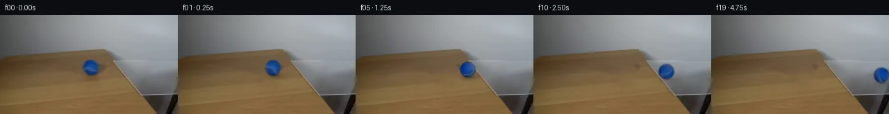

![首帧]()

Round 00
2026-11-04T21:38:50.321988+00:00像素候选变化代码 +237/−0inspection 更新
pixels 62421dc027ac058a · code e02dd395751ad2a5
查看本轮 generate.py 真实 diff
--- previous/generate.py
+++ current/generate.py
@@ -0,0 +1,237 @@
+"""Local, source-conditioned pixel animation; no external assets or renderer."""
+from pathlib import Path
+import json
+import numpy as np
+import cv2
+from PIL import Image, ImageDraw
+from scipy.ndimage import gaussian_filter, map_coordinates, distance_transform_edt
+from scipy.special import erf
+from artifact_io import save
+
+ROOT = Path(__file__).resolve().parent
+H, W = 144, 256
+C0 = np.array([130.9, 75.7])
+RX, RY = 11.15, 11.25
+S = 4
+ORIGINAL = np.asarray(Image.open(ROOT / 'first_frame.png').convert('RGB'))
+Y, X = np.mgrid[:H, :W].astype(float)
+
+
+def background_plate():
+ # Remove only the original object and its soft cast/contact shadow.
+ remove_ball = ((X-C0[0])/15.3)**2 + ((Y-C0[1])/14.0)**2 < 1
+ remove_shadow = ((X-133.0)/21.5)**2 + ((Y-85.4)/12.5)**2 < 1
+ mask = (remove_ball | remove_shadow).astype(np.uint8)
+ plate = cv2.inpaint(ORIGINAL, mask * 255, 4.0, cv2.INPAINT_TELEA).astype(float)
+ # Blend row-wise wood-grain reconstruction into the centre of the hole.
+ # Side bands are actual wood at the same image depth.
+ donor = ORIGINAL.astype(float)
+ left = np.mean(donor[:, 103:113], axis=1)
+ right = np.mean(donor[:, 157:164], axis=1)
+ f = np.clip((X - 108) / 52, 0, 1)
+ rows = left[:, None, :] * (1-f[..., None]) + right[:, None, :] * f[..., None]
+ grain = donor - gaussian_filter(donor, (0.75, 2.0, 0))
+ donor_x = np.clip((X-31).astype(int), 0, W-1)
+ shifted_grain = grain[Y.astype(int), donor_x]
+ filled = rows + shifted_grain * 0.55
+ blend = gaussian_filter(mask.astype(float), 2.0) * mask * 0.78
+ plate = plate*(1-blend[..., None]) + filled*blend[..., None]
+ plate[mask == 0] = donor[mask == 0]
+ return np.clip(plate, 0, 255), mask
+
+
+PLATE, REPAIR_MASK = background_plate()
+# A supersampled crop stores a source-derived spherical albedo residual.
+# Object alpha is inferred from its circular silhouette and blurred edge.
+CY, CX = np.mgrid[58:95, 113:150].astype(float)
+U, V = (CX-C0[0])/RX, (C0[1]-CY)/RY
+D = np.sqrt(U*U+V*V)
+SOURCE_ALPHA = .5*(1-erf((D-1.0)/(np.sqrt(2)*0.073)))
+SOURCE_ALPHA[D>1.24] = 0
+
+
+def light_field(nx, ny, nz):
+ # Coefficients fitted to dark-blue, seam-free pixels of the supplied ball.
+ # A small floor on grazing illumination avoids a black rim.
+ nz = np.maximum(nz, .34)
+ basis = np.stack((np.ones_like(nx), nx, ny, nz, nx*ny), axis=-1)
+ coeff = np.array([[11.835,31.905,62.128],
+ [5.404,8.689,10.944],
+ [-2.182,4.958,11.326],
+ [7.013,39.297,82.635],
+ [.541,-5.010,-7.769]])
+ return basis @ coeff
+
+
+SRC = ORIGINAL[58:95, 113:150].astype(float)
+BGCROP = PLATE[58:95, 113:150]
+FOREGROUND = (SRC-(1-SOURCE_ALPHA[..., None])*BGCROP) / np.maximum(SOURCE_ALPHA[...,None], .06)
+FOREGROUND = np.clip(FOREGROUND, [0, 30, 65], [93, 112, 185])
+L0 = light_field(U, V, np.sqrt(np.maximum(0, 1-D*D)))
+RESIDUAL = FOREGROUND - L0
+# Fill the outer band from the nearest reliable ball sample, avoiding any wood
+# texture in the UV map. Front and back share the source texture projection.
+valid = (D < .97) & (SOURCE_ALPHA > .65)
+idx = distance_transform_edt(~valid, return_distances=False, return_indices=True)
+RESIDUAL[~valid] = RESIDUAL[idx[0][~valid], idx[1][~valid]]
+RESIDUAL = gaussian_filter(RESIDUAL, (.32, .32, 0))
+
+# Continuous rolling kinematics, clockwise in the image with a tipped axis.
+# The shallow displacement is the perspective projection of a level path.
+CAMERA_DOWN_ANGLE = np.deg2rad(32)
+AXIS = np.array([0., np.sin(CAMERA_DOWN_ANGLE), -np.cos(CAMERA_DOWN_ANGLE)])
+VEL = np.array([6.0, .6])
+
+
+def rotation(angle):
+ a = AXIS
… diff truncated; 150 more lines …